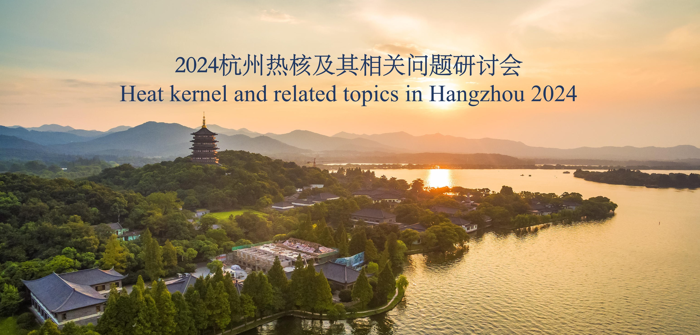

|  |
We plan to hold a workshop on heat kernel and related topics in Hangzhou (Huabei Hotel) from March 22 to 25, 2024 (register in Friday afternoon, March 22 and leaving in Monday morning, March 25).
增强和促进与热核相关的分析、几何、方程及其相关领域的发展，增强国内外同行之间的相互交流与合作，为相关领域的学者提供一个学术交流研讨的平台，我们将于2024年 3月22日-25日在杭州（华北饭店）举办热核及其相关问题研讨会（3月22日（星期五）报到，3月25日（星期一）离会）。本次会议拟邀请国内外热核及其相关领域专家参加，聚焦现代热核的分析与几何及其相关领域中的前沿和热点问题，旨在加强学术交流与合作研究。 会议组织委员会真诚地期待您莅临本次会议， 共同为促进和加强学术交流，推动热核及其相关课题的发展做出贡献！ 本次会议受国家自然科学基金、浙江省自然科学基金和浙江工业大学数学学科建设经费资助。
The workshop schedule is available here（报告信息） or its PDF version (PDF 版本) The workshop manual is available here（会议手册）.
| CAO Jun （曹军） | caojun1860@zjut.edu.cn | Zhejiang University of Technology (浙江工业大学) |
| LIU Liguang （刘丽光） | liuliguang@ruc.edu.cn | Renmin University (中国人民大学) |
| JIN Yongyang （金永阳） | yongyang@zjut.edu.cn | Zhejiang University of Technology (浙江工业大学) |
| SHEN Shoufeng （沈守枫） | mathssf@zjut.edu.cn | Zhejiang University of Technology (浙江工业大学) |
| WU Yurong （吴玉荣） | wuyurong2003@163.com | Zhejiang University of Technology (浙江工业大学) |
| Name | Institution |
|---|---|
| CHEN Jiao （陈焦） | Chongqing Normal Univeristy (重庆师范大学) |
| CHEN Peng (陈鹏) | Sun Yat-Sen University (中山大学) |
| FANG Chenglong (房成龙) | Renming University (中国人民大学) |
| FANG Qiquan (房启全) | Zhejiang University of Science and Technology (浙江科技大学) |
| FU Xing （付星） | Hubei University (湖北大学) |
| GAO Jin (高晋) | Hangzhou Normal University (杭州师范大学) |
| GRIGOR'YAN Alexander (亚历山大·格里戈里安) | Bielefeld University(比勒费尔德大学) |
| GU Qingsong (顾庆松) | Nanjing Univeristy (南京大学) |
| GUO Changyu (郭常予) | Shangdong University (山东大学) |
| HE Ziyi (贺子毅) | Beijing University of Posts and Telecommunications (北京邮电大学) |
| HU Eryan (胡二彦) | Tianjin University (天津大学应用数学中心) |
| HU Jiaxin (胡家信) | Tsinghua University (清华大学) |
| HUANG Xueping (黄学平) | Nanjing University Of Information Science &technology (南京信息工程大学) |
| HUANG Yi (黄益) | Nanjing Normal University (南京师范大学) |
| JIANG Renjin (蒋仁进) | Capital Normal Univeristy (首都师范大学) |
| JIN Dalian (金大廉) | Renming University (中国人民大学) |
| KONG Shilei (孔诗磊) | Sichuang University (四川大学) |
| LI Bo (李波) | Jiaxin University (嘉兴大学) |
| LI Hongliang (李宏亮) | Zhejiang International Studies University (浙江外国语学院) |
| LIN Yong(林勇) | Tsinghua University (清华大学) |
| LIU Liguang （刘丽光） | Renming University (中国人民大学) |
| LIU Yao (刘瑶) | Nankai University (南开大学) |
| QIN Yanyu (秦颜玉) | Nankai University (南开大学) |
| QIU Hua (邱华) | Nanjing University (南京大学) |
| QIU Yanqi (邱彦奇) | Hangzhou Institute for Advanced Study (国科大杭州高等研究院) |
| RUAN Huojun (阮火军) | Zhejiang University (浙江大学) |
| RUAN Jianmiao (阮建苗) | Zhejiang International Studies University (浙江外国语学院) |
| SHI Minglei (石明磊) | Zhejiang Shuren University (浙江树人大学) |
| SUN Yuhua (孙玉华) | Nankai University (南开大学) |
| TAO Jin （陶金） | Hubei University (湖北大学) |
| TAO Xiangxing （陶祥兴） | Zhejiang University of Science and Technology（浙江科技大学） |
| WANG Meng (王梦) | Zhejiang University (浙江大学) |
| WEN Yepei (温叶培) | Beijing Normal University (北京师范大学) |
| WU Huoxiong (伍火熊) | Xiamen University (厦门大学) |
| WU Suqing（吴素青） | Dalian Maritime University （大连海事大学） |
| XI Yakun (席亚昆) | Zhejiang University (浙江大学) |
| YAN Xianjie (闫现杰) | Henan University (河南大学) |
| YU Zhenyu (余振宇) | National University of Defense Technology (国防科技大学) |
| ZHANG Chao (张超) | Zhejiang Gongshang University (浙江工商大学) |
| ZHANG Junda (张俊达) | South China University of Technology (华南理工大学) |
| ZHANG Junqiang (张俊强) | China University of Mining and Technology-Beijing (中国矿业大学) |
| ZHANG Lu (张璐) | Shanxi Normal University (陕西师范大学) |
| ZHANG Yuying (张郁英) | Renming University (中国人民大学) |
| ZHAO Shiliang (赵世良) | Sichuang University (四川大学) |
| TANG Mingjie (谭明杰) | Hangzhou Institute for Advanced Study (国科大杭州高等研究院) |
| CAO Jun (曹军) | Zhejiang University of Technology (浙江工业大学) |
| DENG Chaohong (邓超红) | Zhejiang University of Technology (浙江工业大学) |
| FAN Yi （范毅） | Zhejiang University of Technology (浙江工业大学) |
| GAO Mengyao （高梦瑶） | Zhejiang University of Technology (浙江工业大学) |
| JIN Yongyang (金永阳) | Zhejiang University of Technology (浙江工业大学) |
| SHEN Shoufeng (沈守枫) | Zhejiang University of Technology (浙江工业大学) |
| TANG Li （唐黎） | Zhejiang University of Technology (浙江工业大学) |
| WANG Chao （王超） | Zhejiang University of Technology (浙江工业大学) |
| WU Yurong (吴玉荣) | Zhejiang University of Technology (浙江工业大学) |
| YU Zhuonan （俞卓楠） | Zhejiang University of Technology (浙江工业大学) |
| YU Nianxing (余念星） | Zhejiang University of Technology (浙江工业大学) |
| ZHANG Qishun(张旗顺) | Zhejiang University of Technology (浙江工业大学) |
| ZHOU Xianchao （周显潮） | Zhejiang University of Technology (浙江工业大学) |
| SU Yiming（苏一鸣） | Zhejiang University of Technology (浙江工业大学) |
| WANG Yanlin（王彦霖） | Zhejiang University of Technology (浙江工业大学) |
{kind=link}